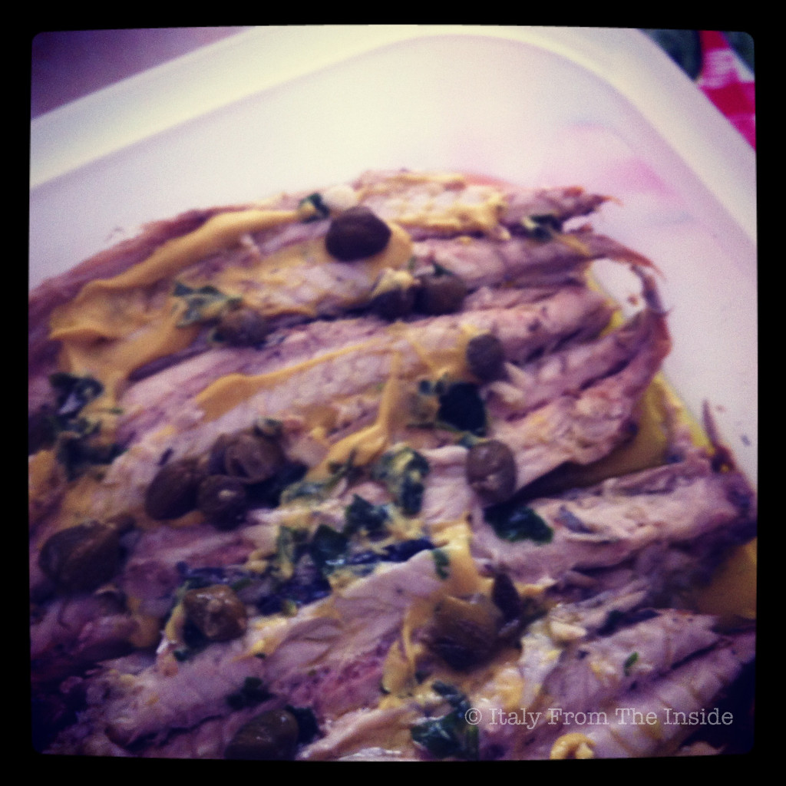

As much as this title sounds funny, it's the literary translation of pesce azzurro, a group of fish, generally of small dimensions, caught off the coasts of the Mediterranean Sea. The mackerels belong to this group and are delicious when dressed with simple ingredients such as mustard, capers, fresh garlic, parsley, lemon, salt and extra virgin olive oil. As they say in Italy it is buono da leccarsi i baffi, meaning that it is so good that you would lick your own mustache.